토목기사 (2015-09-19 기출문제)
1과목: 응용역학
1. 다음 그림과 같은 캔틸레버보에 휨모멘트 하중M이 작용할 경우 최대처짐 δmax 의 값은? (단, 보의 휨강성은 EI 임)
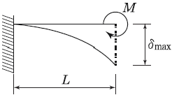
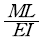
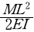
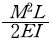
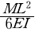
(정답률: 61%)

2. 단면이 10cm×20cm인 장주가 있다. 그 길이가 3m일 때 이 기둥의 좌굴하중은 약 얼마인가? (단, 기둥의 E=2×105kg/cm2, 지지상태는 일단 고정, 타단 자유이다.)
- 4.58t
- 9.14t
- 18.28t
- 36.56t
(정답률: 67%)
3. 아래 그림과 같은 정정 라멘에 분포하중 w가 작용할 때 최대 모멘트를 구하면?
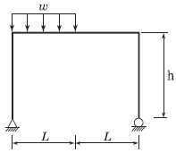
- 0.186wL2
- 0.219wL2
- 0.250wL2
- 0.281wL2
(정답률: 54%)
4. 그림과 같은 하중을 받는 보의 최대 전단응력은?
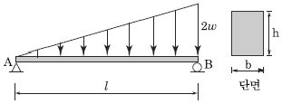
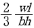
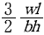
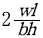
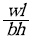
(정답률: 59%)
5. 정정 구조물에 비해 부정정 구조물이 갖는 장점을 설명한 것 중 틀린 것은?
- 설계모멘트의 감소로 부재가 절약된다.
- 부정정 구조물은 그 연속성 때문에 처짐의 크기가 작다.
- 외관을 우아하고 아름답게 제작할 수 있다.
- 지점 침하 등으로 인해 발생하는 응력이 적다.
(정답률: 52%)
6. 반지름이 25cm인 원형단면을 가지는 단주에서 핵의 면적은 약 얼마인가?
- 122.7cm2
- 168.4cm2
- 245.4cm2
- 336.8cm2
(정답률: 73%)
7. 단면 2차 모멘트의 특성에 대한 설명으로 틀린 것은?
- 단면 2차 모멘트의 최소값은 도심에 대한 것이며 그 값은 “0” 이다.
- 정삼각형, 정사각형, 정다각형의 도심에 대한 단면 2차 모멘트는 축의 회전에 관계없이 모두 같다.
- 단면 2차 모멘트는 좌표측에 상관없이 항상(+)의 부호를 갖는다.
- 단면 2차 모멘트가 크면 휨강성이 크고 구조적으로 안전하다.
(정답률: 60%)
8. 단면이 원형(반지름 R)인 보에 휨모멘트 M 이 작용할 때 이 보에 작용하는 최대휨응력은?
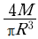
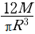
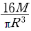
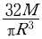
(정답률: 68%)
9. 다음 그림에 표시된 힘들의 x 방향의 합력은 약 얼마인가?
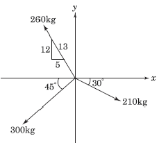
- 55 kg(←)
- 77 kg(→)
- 122 kg(→)
- 13 0kg(←)
(정답률: 74%)
10. 체적탄성계수 K 를 탄성계수 E 와 프와송비 v로 옳게 표시한 것은?
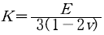
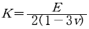
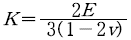
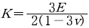
(정답률: 78%)
11. 그림과 같은 트러스에서 부재 U 의 부재력은?
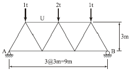
- 1.0t (압축)
- 1.2t (압축)
- 1.3t (압축)
- 1.5t (압축)
(정답률: 69%)
12. 그림과 같은 라멘 구조물의 E 점에서의 불균형 모멘트에 대한 부재 EA 의 모멘트 분배율은?
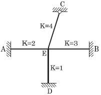
- 0.222
- 0.1667
- 0.2857
- 0.40
(정답률: 75%)
13. 다음의 2부재로 된 TRUSS계의 변형에너지 U 를 구하면 얼마인가? (단, ( )안의 값은 외력 P 에 의한 부재력이고, 부재의 축강성 AE 는 일정하다.)
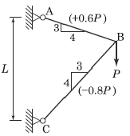
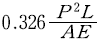
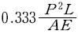
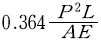
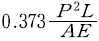
(정답률: 47%)
14. 아래 그림과 같은 보의 중앙점 C 의 전단력의 값은?
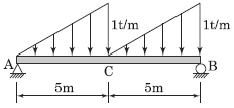
- 0
- -0.22t
- -0.42t
- -0.62t
(정답률: 60%)
15. 다음 부정정보의 B 지점에 침하가 발생하였다. 발생된 침하량이 1cm라면 이로 인한 B 지점의 모멘트는 얼마인가? (단, EI=1×106 kgㆍcm2 )
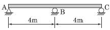
- 16.75 kgㆍcm
- 17.75 kgㆍcm
- 18.75 kgㆍcm
- 19.75 kgㆍcm
(정답률: 44%)
16. 중공 원형 강봉에 비틀림력 T 가 작용할 때 최대 전단 변형을 γmax =750 ×10-6 rad으로 측정되었다. 봉의 내경은 60mm이고 외경은 75mm일 때 봉에 작용하는 비틀림력 T 를 구하면? (단, 전단탄성계수 G=8.15×105 kg/cm2)
- 29.9 tㆍcm
- 32.7 tㆍcm
- 35.3 tㆍcm
- 39.2 tㆍcm
(정답률: 42%)
17. 다음 구조물에서 하중이 작용하는 위치에서 일어나는 처짐의 크기는?
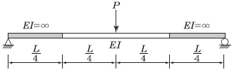
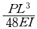
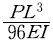
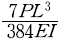
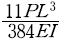
(정답률: 67%)
18. 아래 그림과 같은 내민보에서 D 점의 휨 모멘트 MD 는 얼마인가?
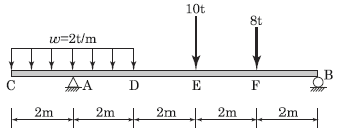
- 18 tㆍm
- 16 tㆍm
- 14 tㆍm
- 12 tㆍm
(정답률: 59%)
19. 그림과 같은 단면에서 외곽 원의 직경 (D)이 60cm이고 내부 원의 직경 (D/2)은 30cm라면, 빗금 친 부분의 도심의 위치는 x 축에서 얼마나 떨어진 곳인가?
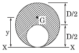
- 33cm
- 35cm
- 37cm
- 39cm
(정답률: 65%)
20. 그림과 같은 트러스의 C 점에 300kg의 하중이 작용할 때 C 점에서의 처짐을 계산하면? (단, E=2×106 kg/cm2, 단면적=1cm2)
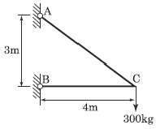
- 0.158cm
- 0.315cm
- 0.473cm
- 0.630cm
(정답률: 56%)
2과목: 측량학
21. 수심이 h 인 하천의 평균 유속을 구하기 위하여 수면으로부터 0.2h, 0.6h, 0.8h가 되는 깊이에서 유속을 측량한 결과 초당 0.8m, 1.5m, 1.0m이었다. 3점법에 의한 평균 유속은?
- 0.9m/s
- 1.0m/s
- 1.1m/s
- 1.2m/s
(정답률: 70%)
22. 직사각형 두 변의 길이를 1/200 정확도로 관측하여 면적을 구할 때 산출된 면적의 정확도는?
- 1/50
- 1/100
- 1/200
- 1/400
(정답률: 70%)
23. 190km/h인 항공기에서 초점거리 153mm인 카메라로 시가지를 촬영한 항공사진이 있다. 사진 상에서 허용흔 들림량 0.01mm, 최장 노출시간 1/250초, 사진크기 23cm×23cm일 때, 연직점으로부터 7cm 떨어진 위치에 있는 건물의 실제 높이가 120m라면 이 건물의 기복변위는?
- 1.4mm
- 2.0mm
- 2.6mm
- 3.4mm
(정답률: 41%)
24. 직접고저측량을 실시한 결과가 그림과 같을 때, A 점의 표고가 10m라면 C 점의 표고는? (단, 그림은 개략도로 실제 치수와 다를 수 있음.) [단위 : m]
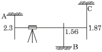
- 9.57m
- 9.66m
- 10.57m
- 10.66m
(정답률: 72%)
25. 항공 LiDAR 자료의 활용 분야로 틀린 것은?
- 도로 및 단지 설계
- 골프장 설계
- 지하수 탐사
- 연안 수심 DB구축
(정답률: 72%)
26. 곡선반지름 R , 교각 I 인 단곡선을 설치할 때 사용되는 공식으로 틀린 것은?
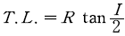
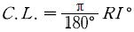
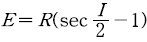
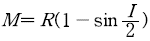
(정답률: 71%)
27. 지구 표면의 거리 35km 까지를 평면으로 간주했다면 허용정밀도는 약 얼마인가? (단, 지구의 반지름은 6,370 km 이다.)
- 1/300000
- 1/400000
- 1/500000
- 1/600000
(정답률: 58%)
28. 도로의 종단곡선으로 주로 사용되는 곡선은?
- 2차 포물선
- 3차 포물선
- 클로소이드
- 렘니스케이트
(정답률: 53%)
29. 축척 1:25000의 수치지형도에서 경사가 10%인 등경사 지형의 주곡선간 도상거리는?
- 2mm
- 4mm
- 6mm
- 8mm
(정답률: 56%)
30. 트레버스측량에서 관측값의 계산은 편리하나 한번 오차가 생기면 그 영향이 끝까지 미치는 각관측 방법은?
- 교각법
- 편각법
- 협각법
- 방위각법
(정답률: 67%)
31. 수준망의 관측 결과가 표와 같을 때, 정확도가 가장 높은 것은?
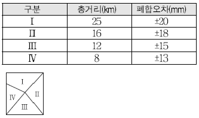
- Ⅰ
- Ⅱ
- Ⅲ
- Ⅳ
(정답률: 62%)
32. 축척 1:5000 수치지형도의 주곡선 간격으로 옳은 것은?
- 5m
- 10m
- 15m
- 20m
(정답률: 61%)
33. 좌표를 알고 있는 기지점에 고정용 수신기를 설치하여 보정자료를 생성하고 동시에 미지점에 또 다른 수신기를 설치하여 고정점에서 생성된 보정자료를 이용해 미지점의 관측자료를 보정함으로써 높은 정확도를 확보 하는 GPS측위 방법은?
- KINEMATIC
- STATIC
- SPOT
- DGPS
(정답률: 72%)
34. 노선측량에서 실시설계측량에 해당하지 않는 것은?
- 중심선 설치
- 용지측량
- 지형도 작성
- 다각측량
(정답률: 45%)
35. 초점거리 210mm인 카메라를 사용하여 사진크기 18cm×18cm로 평탄한 지역을 촬영한 항공사진에서 주점 기선장이 70mm 이었다. 이 항공사진의 축척이 1: 20000 이었다면 비고 200m에 대한 시차차는?
- 2.2mm
- 3.3mm
- 4.4mm
- 5.5mm
(정답률: 50%)
36. 축척에 대한 설명 중 옳은 것은?
- 축척 1:500 도면에서의 면적은 실제면적의 1/1000 이다.
- 축척 1:600 도면을 축척 1:200으로 확대했을 때 도면의 크기는 3배가 된다.
- 축척 1:300 도면에서의 면적은 실제면적의 1/9000 이다.
- 축척 1:500 도면을 축척 1:1000으로 축소했을 때 도면의 크기는 1/4이 된다.
(정답률: 61%)
37. 다음 중 지상기준점 측량 방법으로 틀린 것은?
- 항공사진삼각측량에 의한 방법
- 토털스테이션에 의한 방법
- 지상레이더에 의한 방법
- GPS의 의한 방법
(정답률: 40%)
38. 다음 중 물리학적 측지학에 해당되는 것은?
- 탄성파 관측
- 면적 및 부피 계산
- 구과량 계산
- 3차원 위치 결정
(정답률: 66%)
39. 그림에서 두 각이 ∠AOB=15°32' 18.9''±5'' , ∠BOC=67°17' 45''±15'' 로 표시될 때 두 각의 합 ∠AOC 는?
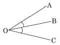
- 82°50' 3.9''±5.5''
- 82°50' 3.9''±10.1''
- 82°50' 3.9''±15.4''
- 82°50' 3.9''±15.8''
(정답률: 62%)
40. 2,000m의 거리를 50m씩 끊어서 40회 관측하였다. 관측결과 오차가 ±0.14m이었고, 40회 관측의 정밀도가 동일하다면, 50m 거리 관측의 오차는?
- ±0.022m
- ±0.019m
- ±0.016m
- ±0.013m
(정답률: 56%)
3과목: 수리학 및 수문학
41. 유속분포의 방정식이 v=2y1/2 로 표시될 때 경계면에서 0.5m인 점에서의 속도 경사는? (단, y : 경계면으로부터의 거리)
- 4.232 sec-1
- 3.564 sec-1
- 2.831 sec-1
- 1.414 sec-1
(정답률: 65%)
42. 단위중량 w 또는 밀도 ρ 인 유체가 유속 V 로서 수평방향으로 흐르고 있다. 직경 d , 길이 l 인 원주가 유체의 흐름방향에 직각으로 중심축을 가지고 놓였을 때 원주에 작용하는 항력 (D) 은? (단, C : 항력계수, g : 중력가속도)
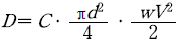
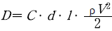
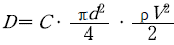
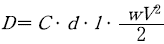
(정답률: 67%)
43. 상대조도(相對粗度)를 바르게 설명한 것은?
- 차원(次元)이 [L]이다.
- 절대조도를 관경으로 곱한 값이다.
- 거친 원관내의 난류인 흐름에서 속도분포에 영향을 준다.
- 원형관 내의 난류흐름에서 마찰손실계수와 관계가 없는 값이다.
(정답률: 56%)
44. 직사각형 단면의 수로에서 단위폭당 유량이 0.4m3/s/m 이고 수심이 0.8m일 때 비에너지는? (단, 에너지 보정계수는 1.0으로 함.)
- 0.801m
- 0.813m
- 0.825m
- 0.837m
(정답률: 63%)
45. 그림과 같이 d1=1 m인 원통형 수조의 측벽에 내경 d2=10 cm의 관으로 송수할 때의 평균 유속 (V2)이 2m/s 이었다면 이때의 유량 Q 와 수조의 수면이 강하하는 유속 V1 은?
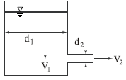
- Q=1.57L/s, V1= 2cm/s
- Q=1.57L/s, V1=3 cm/s
- Q=15.7L/s, V1=2 cm/s
- Q=15.7L/s, V1=3 cm/s
(정답률: 55%)
46. Bernoulli의 정리로서 가장 옳은 것은?
- 동일한 유선상에서 유체입자가 가지는 Energy는 같다.
- 동일한 단면에서의 Energy의 합이 항상 같다.
- 동일한 시각에는 Energy의 양이 불변한다.
- 동일한 질량이 가지는 Energy는 같다.
(정답률: 53%)
47. 지하수의 유속에 대한 설명으로 옳은 것은?
- 수온이 높으면 크다.
- 수온이 낮으면 크다.
- 4℃에서 가장 크다.
- 수온에는 관계없이 일정하다.
(정답률: 57%)
48. 물의 순환에 대한 다음 수문 사항 중 성립이 되지 않는 것은?
- 지하수 일부는 지표면으로 용출해서 다시 지표수가 되어 하천으로 유입한다.
- 지표면에 도달한 우수는 토양 중에 수분을 공급하고 나머지가 아래로 침투해서 지하수가 된다.
- 땅속에 보류된 물과 지표하수는 토양면에서 증발하고 일부는 식물에 흡수되어 증산한다.
- 지표에 강하한 우수는 지표면에 도달 전에 그 일부가 식물의 나무와 가지에 의하여 차단된다.
(정답률: 45%)
49. 물이 하상의 돌출부를 통과할 경우 비에너지와 비력의 변화는?
- 비에너지와 비력이 모두 감소한다.
- 비에너지는 감소하고 비력은 일정하다.
- 비에너지는 증가하고 비력은 감소한다.
- 비에너지는 일정하고 비력은 감소한다.
(정답률: 45%)
50. 다음 중 합성 단위유량도를 작성할 때 필요한 자료는?
- 우량 주상도
- 유역 면적
- 직접 유출량
- 강우의 공간적 분포
(정답률: 42%)
51. 그림과 같이 기하학적으로 유사한 대 ㆍ 소(大小)원형 오리피스의 비가 n =D/d=H/h 인 경우에 두 오리피스의 유속, 축류단면, 유량의 비로 옳은 것은? (단, 유속계 수 Cv , 수축계수 Ca는 대ㆍ소 오리피스가 같다.)
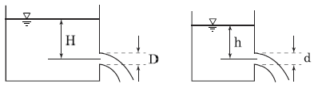
- 유속의 비= n2 , 축류단면의 비= n1/2 , 유량의 비= n2/3
- 유속의 비= n1/2, 축류단면의 비= n2 , 유량의 비= n5/2
- 유속의 비= n1/2 , 축류단면의 비= n1/2 , 유량의 비= n5/2
- 유속의 비= n2 , 축류단면의 비= n1/2 , 유량의 비= n5/2
(정답률: 49%)
52. 누가우량곡선(rainfall mass curve)의 특성으로 옳은 것은?
- 누가우량곡선은 자기우량기록에 의하여 작성하는 것보다 보통우량계의 기록에 의하여 작성하는 것이 더 정확하다.
- 누가우량곡선으로부터 일정기간 내의 강우량을 산출 하는 것은 불가능하다.
- 누가우량곡선의 경사는 지역에 관계없이 일정하다.
- 누가우량곡선의 경사가 클수록 강우강도가 크다.
(정답률: 61%)
53. 관내에 유속 v로 물이 흐르고 있을 때 밸브의 급격한 폐쇄 등에 의하여 유속이 줄어들면 이에 따라 관내에 압력의 변화가 생기는데 이것을 무엇이라 하는가?
- 수격압(水擊壓)
- 동압(動壓)
- 정압(靜壓)
- 정체압(停滯壓)
(정답률: 64%)
54. 수문곡선에서 시간매개변수에 대한 정의 중 틀린 것은?
- 첨두시간은 수문곡선의 상승부 변곡점부터 첨두유량이 발생하는 시각까지의 시간차이다.
- 지체시간은 유효우량주상도의 중심에서 첨두유량이 발생하는 시각까지의 시간차이다.
- 도달시간은 유효우량이 끝나는 시각에서 수문곡선의 감수부 변곡점까지의 시간차이다.
- 기저시간은 직접유출이 시작되는 시각에서 끝나는 시각까지의 시간차이다.
(정답률: 29%)
55. 지하수의 투수계수와 관계가 없는 것은?
- 토사의 형상
- 토사의 입도
- 물의 단위중량
- 토사의 단위중량
(정답률: 70%)
56. 경심이 8m, 동수경사가 1/100, 마찰손실계수 f=0.03일 때 Chezy의 유속계수 C 를 구한 값은?
- 51.1 m1/2/s
- 25.6 M1/2/s
- 36.1 m1/2/s
- 44.3 m1/2/s
(정답률: 55%)
57. Manning의 조도계수 n에 대한 설명으로 옳지 않은 것은?
- 콘크리트관이 유리관보다 일반적으로 값이 작다.
- Kutter의 조도계수보다 이후에 제안되었다.
- Chezy의 C계수와는 C=1/n×R1/6 의 관계가 성립한다.
- n 의 값은 대부분 1보다 작다.
(정답률: 57%)
58. 자연하천의 특성을 표현할 때 이용되는 하상계수에 대한 설명으로 옳은 것은?
- 홍수 전과 홍수 후의 하상 변화량의 비를 말한다.
- 최심하상고와 평형하상고의 비이다.
- 개수 전과 개수 후의 수심 변화량의 비를 말한다.
- 최대유량과 최소유량의 비를 나타낸다.
(정답률: 69%)
59. 그림에서 h=25cm, H=40cm 이다. A , B 점의 압력차는?
- 1N/cm2
- 3N/cm2
- 49N/cm2
- 100N/cm2
(정답률: 45%)
60. 삼각 위어(weir)에 월류 수심을 측정할 때 2%의 오차가 있었다면 유량 산정시 발생하는 오차는?
- 2%
- 3%
- 4%
- 5%
(정답률: 62%)
4과목: 철근콘크리트 및 강구조
61. 그림은 복철근 직사각형 단면의 변형률이다. 다음중 압축철근이 항복하기 위한 조건으로 옳은 것은?
(정답률: 59%)
62. 단철근 직사각형 균형보에서 fy=400MPa, d=700mm 일 때 압축연단에서 중립축까지의 거리(c)는?
- 410mm
- 420mm
- 430mm
- 440mm
(정답률: 53%)
63. fck=35MPa, fy=350MPa을 사용하고 bw=500mm, d=1,000mm인 휨을 받는 직사각형 단면에 요구되는 최소 휨철근량은 얼마인가?
- 1,524mm2
- 1,745mm2
- 2,000mm2
- 2,113mm2
(정답률: 58%)
64. PS콘크리트의 강도개념(strength concept)을 설명한 것으로 가장 적당한 것은?
- 콘크리트에 프리스트레스가 가해지면 PSC부재는 탄성재료로 전환되고 이의 해석은 탄성이론으로 가능하다는 개념
- PSC 보를 RC 보처럼 생각하여, 콘크리트는 압축력을 받고 긴장재는 인장력을 받게 하여 두 힘의 우력 모멘트로 외력에 의한 휨모멘트에 저항시킨다는 개념
- PS콘크리트는 결국 부재에 작용하는 하중의 일부 또는 전부를 미리 가해진 프리스트레스와 평행이 되도록 하는 개념
- PS콘크리트는 강도가 크기 때문에 보의 단면을 강재의 단면으로 가정하여 압축 및 인장을 단면전체가 부담할 수 있다는 개념
(정답률: 59%)
65. 프리스트레스트 콘크리트 중 비부착긴장재를 가진 부재에서 깊이에 대한 경간의 비가 35 이하인 경우 공칭강도를 발휘할 때 긴장재의 인장응력 (fps)을 구하는 식으로 옳은 것은? (단, fpe : 긴장재의 유효프리스트레스, ρp : 긴장재의 비)
(정답률: 39%)
66. 강도 설계법에서 사용성 검토에 해당하지 않는 사항은?
- 철근의 피로
- 처짐
- 균열
- 투수성
(정답률: 68%)
67. 그림과 같은 띠철근 기둥에서 띠철근의 최대 간격으로 적당한 것은? (단, D10의 공칭직격은 9.5mm, D32의 공칭직경은 31.8mm)
- 456mm
- 492mm
- 500mm
- 508mm
(정답률: 58%)
68. 보의 길이 l=20m, 활동량 Δl=4mm, Ep=200,000MPa일 때 프리스트레스 감소량 Δfp=는? (단, 일단 정착임.)
- 40MPa
- 30MPa
- 20MPa
- 15MPa
(정답률: 55%)
69. bw=350mm, d=600mm인 단철근 직사각형보에서 콘크리트가 부담할 수 있는 공칭 전단 강도를 정밀식으로 구하면? (단, Vu=100kN, Mu=300kN·m, ρw=0.016, f ck=24MPa)
- 164.2kN
- 171.5kN
- 176.4kN
- 182.7kN
(정답률: 41%)
70. 그림에 나타난 이등변삼각형 단철근보의 공칭 휨강도 Mn 를 계산하면? (단, 철근 D19 3본의 단면적은 860mm2, fck=28MPa, fy =350MPa이다.)
- 75.3 kN·m
- 85.2 kN·m
- 95.3 kN·m
- 1⑤.3 kN·m
(정답률: 38%)
71. 길이 6m의 철근콘크리트 캔틸레버보의 처짐을 계산하지 않아도 되는 보의 최소두께는 얼마인가? (단, f ck=21MPa, f y=350MPa)
- 612mm
- 653mm
- 698mm
- 731mm
(정답률: 59%)
72. 비틀림에 저항하는 유효단면의 보가 슬래브와 일체로 되거나 완전한 합성구조로 되어 있을 때 '비틀림 단면'에 대한 설명으로 옳은 것은?
- 슬래브의 위 또는 아래로 내민 깊이 중 큰 깊이만큼을 보의 양측으로 연장한 슬래브 부분을 포함한 단면으로서, 보의 한 측으로 연장되는 거리를 슬래브 두께의 8배 이하로 한 단면
- 슬래브의 위 또는 아래로 내민 깊이 중 큰 깊이만큼을 보의 양측으로 연장한 슬래브 부분을 포함한 단면으로서, 보의 한 측으로 연장되는 거리를 슬래브 두께의 4배 이하로 한 단면
- 슬래브의 위 또는 아래로 내민 깊이 중 큰 깊이만큼을 보의 양측으로 연장한 슬래브 부분을 포함한 단면으로서, 보의 한 측으로 연장되는 거리를 슬래브 두께의 2배 이하로 한 단면
- 슬래브의 위 또는 아래로 내민 깊이 중 큰 깊이만큼을 보의 양측으로 연장한 슬래브 부분을 포함한 단면으로서, 보의 한 측으로 연장되는 거리를 슬래브 두께 이하로 한 단면
(정답률: 46%)
73. 아래 그림과 같은 단면을 가지는 직사각형 단철근보의 설계휨강도를 구할 때 사용되는 강도감소계수 φ값은 약 얼마인가? (단, As는 3176mm2, fck=38MPa, fy=400MPa)
- 0.731
- 0.764
- 0.817
- 0.834
(정답률: 58%)
74. 그림과 같은 용접부의 응력은?
- 115MPa
- 110MPa
- 100MPa
- 94MPa
(정답률: 68%)
75. 단철근 직사각형보에서 부재축에 직각인 전단 보강 철근이 부담해야 할 전단력 Vs가 350kN이라 할 때 전단 보강 철근의 간격 s는 얼마 이하이어야 하는가? (단, Av=253mm2, fy=400MPa, fck=28MPa, bw=300mm, d=600mm)
- 150mm
- 173mm
- 264mm
- 300mm
(정답률: 39%)
76. 확대머리 이형철근의 인장에 대한 정착길이는 아래의 표와 같은 식으로 구할 수 있다. 여기서, 이 식을 적용하기 위해 만족하여야 할 조건에 대한 설명으로 틀린 것은?(오류 신고가 접수된 문제입니다. 반드시 정답과 해설을 확인하시기 바랍니다.)
- 철근의 설계기준항복강도는 400MPa 이하이어야 한다.
- 콘크리트의 설계기준압축강도는 40MPa 이하이어야 한다.
- 보통중량콘크리트를 사용한다.
- 철근의 지름은 41mm 이하이어야 한다.
(정답률: 41%)
77. 그림과 같은 리벳 연결에서 리벳의 허용력은? (단, 리벳 지름은 12mm이며, 리벳의 허용전단응력은 200MPa, 허용지압응력은 400MPa이다.)
- 60.2KN
- 55.2kN
- 45.2kN
- 40.2kN
(정답률: 45%)
78. 2방향 슬래브의 직접설계법을 적용하기 위한 제한 사항으로 틀린 것은?
- 각 방향으로 3경간 이상이 연속되어야 한다.
- 슬래브판들은 단변 경간에 대한 장변 경간의 비가 2이하인 직사각형이어야 한다.
- 모든 하중은 슬래브 판 전체에 걸쳐 등분포된 연직 하중이어야 한다.
- 연속한 기둥 중심선을 기준으로 기둥의 어긋남은 그 방향 경간의 최대 20% 이하이어야 한다.
(정답률: 65%)
79. 보의 유효깊이(d) 600mm, 복부의 폭( bw) 320mm, 플랜지의 두께 130mm, 인장철근량 7650mm2, 양쪽 슬래브의 중심간 거리 2.5m, 경간 10.4m, fck=25MPa, fy=400MPa로 설계된 대칭 T형보가 있다. 이 보의 등가 직사각형 응력 블록의 깊이(a)는?
- 51.2mm
- 60mm
- 137.5mm
- 145mm
(정답률: 46%)
80. 1방향 철근콘크리트 슬래브에서 수축ㆍ온도 철근의 간격에 대한 설명으로 옳은 것은?
- 슬래브 두께의 3배 이하, 또한 300mm 이하로 하여야 한다.
- 슬래브 두께의 3배 이하, 또한 450mm 이하로 하여야 한다.
- 슬래브 두께의 5배 이하, 또한 450mm 이하로 하여야 한다.
- 슬래브 두께의 5배 이하, 또한 300mm 이하로 하여야 한다.
(정답률: 35%)
5과목: 토질 및 기초
81. 그림과 같이 3층으로 되어 있는 성층토의 수평방향의 평균투수계수는?
- 2.97×10-4cm/sec
- 3.04×10-4cm/sec
- 6.04×10-4cm/sec
- 4.04×10-4cm/sec
(정답률: 59%)
82. 점착력이 0.1kg/cm2, 내부마찰각이 30°인 흙에 수직응력 20kg/cm2를 가할 경우 전단응력은?
- 20.1kg/cm2
- 6.76kg/cm2
- 1.16kg/cm2
- 11.65kg/cm2
(정답률: 60%)
83. 입경가적곡선에서 가적통과율 30%에 해당하는 입경이 D30=1.2mm일 때, 다음 설명 중 옳은 것은?
- 균등계수를 계산하는데 사용된다.
- 이 흙의 유효입경은 1.2mm 이다.
- 시료의 전체무게 중에서 30%가 1.2mm 보다 작은 입자이다.
- 시료의 전체무게 중에서 30%가 1.2mm 보다 큰 입자이다.
(정답률: 61%)
84. 도로의 평판재하시험을 끝낼 수 있는 조건이 아닌 것은?
- 하중강도가 현장에서 예상되는 최대 접지압을 초과시
- 하중강도가 그 지반의 항복점을 넘을 때
- 침하가 더이상 일어나지 않을 때
- 침하량이 15mm에 달할 때
(정답률: 57%)
85. 실내시험에 의한 점토의 강도증가율(cu/p) 산정 방법이 아닌 것은?
- 소성지수에 의한 방법
- 비배수 전단강도에 의한 방법
- 압밀비배수 삼축압축시험에 의한 방법
- 직접전단시험에 의한 방법
(정답률: 56%)
86. 무게 300kg의 드롭햄머로 3m 높이에서 말뚝을 타입할 때 1회 타격당 최종 침하량이 1.5cm 발생하였다. Sander 공식을 이용하여 산정한 말뚝의 허용지지력은?
- 7.50t
- 8.61t
- 9.37t
- 15.67t
(정답률: 40%)
87. 함수비 18%의 흙 500kg을 함수비 24%로 만들려고 한다. 추가해야 하는 물의 양은?
- 80.41kg
- 54.52kg
- 38.92kg
- 25.43kg
(정답률: 53%)
88. 그림의 유선망에 대한 설명 중 틀린 것은?(단, 흙의 투수계수는 2.5×10-3cm/s이다.)
- 유선의 수=6
- 등수두선의수=6
- 유로의 수=5
- 전침투유량 Q=0.278m3/sec
(정답률: 63%)
89. 다음 그림과 같은 Sampler에서 면적비는 얼마인가?
- 5.80%
- 5.97%
- 14.62%
- 14.80%
(정답률: 56%)
90. γt =1.8t/m3, cu =3.0t/m2, φ =0°의 점토지반을 수평면과 50°의 기울기로 굴착하려고 한다. 안전율을 2.0으로 가정하여 평면활동 이론에 의해 굴착깊이를 결정하면?
- 2.80m
- 5.60m
- 7.12m
- 9.84m
(정답률: 32%)
91. 점성토 시료를 교란시켜 재성형을 한 경우 시간이 지남에 따라 강도가 증가하는 현상을 나타내는 용어는?
- 크립(creep)
- 틱소트로피(thixotropy)
- 이방성(anisotropy)
- 아이소크론(isocron)
(정답률: 65%)
92. 현장에서 다짐된 사질토의 상대다짐도가 95%이고 최대 및 최소 건조단위중량이 각각 1.76t/m3, 1.5t/m3이라고 할 때 현장시료의 상대밀도는?
- 74%
- 69%
- 64%
- 59%
(정답률: 48%)
93. 두 개의 기둥하중 Q1=30 t , Q2=20 t 을 받기 위한 사다리꼴 기초의 폭 B1, B2 를 구하면?(단, 지반의 허용지지력 qa = 2t/m2)
- B1 = 7.2m, B2 = 2.8m
- B1 = 7.8m, B2 = 2.2m
- B1 = 6.2m, B2 = 3.8m
- B1 = 6.8m, B2 = 3.2m
(정답률: 23%)
94. 2m×3m 크기의 직사각형 기초에 6t/m2의 등분포하중이 작용할 때 기초 아래 10m 되는 깊이에서의 응력증가량을 2 : 1 분포법으로 구한 값은?
- 0.23t/m2
- 0.54t/m2
- 1.33t/m2
- 1.83t/m2
(정답률: 48%)
95. 4m×4m인 정사각형 기초를 내부마찰각 φ=20° , 점착력 c= 3t/m2인 지반에 설치하였다. 흙의 단위중량 γ= 1.9t/m3이고 안전율이 3일 때 기초의 허용하중은? (단, 기초의 깊이는 1m이고, Nq= 7.44, Nγ=4.97, Nc= 17.69 이다.)
- 378t
- 524t
- 675t
- 814t
(정답률: 52%)
96. 다음 중 사운딩 시험이 아닌 것은?
- 표준관입 시험
- 평판재하 시험
- 콘 관입 시험
- 베인 시험
(정답률: 56%)
97. 활동면위의 흙을 몇 개의 연직 평행한 절편으로 나누어 사면의 안정을 해석하는 방법이 아닌 것은?
- Fellenius 방법
- 마찰원법
- Spencer 방법
- Bishop의 간편법
(정답률: 58%)
98. 접지압(또는 지반반력)이 다음 그림과 같이 되는 경우는?
- 푸팅: 강성, 기초지반: 점토
- 푸팅: 강성, 기초지반: 모래
- 푸팅: 연성, 기초지반: 점토
- 푸팅: 연성, 기초지반: 모래
(정답률: 25%)
99. 두께 2cm인 점토시료의 압밀시험결과 전 압밀량의 90%에 도달하는데 1시간이 걸렸다. 만일 같은 조건에서 같은 점토로 이루어진 2m의 토층위에 구조물을 축조한 경우 최종침하량의 90%에 도달하는데 걸리는 시간은?
- 약 250일
- 약 368일
- 약 417일
- 약 525일
(정답률: 52%)
100. 그림과 같은 옹벽배면에 작용하는 토압의 크기를 Rankine의 토압공식으로 구하면?
- 3.2t/m
- 3.7t/m
- 4.7t/m
- 5.2t/m
(정답률: 54%)
6과목: 상하수도공학
101. 펌프의 비속도(비교회전도, Ns)에 대한 설명으로 서 옳은 것은?
- Ns가 작게 되면 사류형으로 되고 계속 작아지면 축류형으로 된다.
- Ns가 커지면 임펠러 외경에 대한 임펠러의 폭이 작아진다.
- 토출량과 전양정이 동일하면 회전속도가 클수록 Ns가 작아진다.
- Ns가 작으면 일반적으로 토출량이 적은 고양정의 펌프를 의미한다.
(정답률: 58%)
102. 그래프는 어떤 하천의 자정작용을 나타낸 용존산소 부족곡선이다. 다음 중 어떤 물질이 하천으로 유입 되었다고 보는 것이 가장 타당한가?
- 질산성 질소
- 생활하수
- 농도가 매우 낮은 폐산(廢酸)
- 농도가 매우 낮은 폐알카리
(정답률: 67%)
103. 급수방식에 대한 설명으로서 틀린 것은?
- 급수방식은 직결식과 저수조식으로 나누며 이를 병용하기도 한다.
- 저수조식은 급수관으로부터 수돗물을 일단 저수조에 받아서 급수하는 방식이다.
- 배수관의 압력변동에 관계없이 상시 일정한 수량과 압력을 필요로 하는 경우는 저수조식으로 한다.
- 재해 시나 사고 등에 의한 수도의 단수나 감수 시에도 물을 반드시 확보해야 할 경우는 직결식으로 한다.
(정답률: 60%)
104. 하수관의 접합방법에 관한 설명 중 틀린 것은?
- 관정접합은 토공량을 줄이기 위하여 평탄한 지형에 많이 이용되는 방법이다.
- 단차접합은 지표의 경사가 급한 경우에 이용되는 방법이다.
- 관저접합은 관의 내면하부를 일치시키는 방법이다.
- 관중심접합은 관의 중심을 일치시키는 방법이다.
(정답률: 59%)
1⑤. 어떤 하수의 5일 BOD 농도가 300mg/L, 탈산소계수(상용 대수)값이 0.2 day-1일 때 최종 BOD 농도는?
- 310.0mg/L
- 333.3mg/L
- 366.7mg/L
- 375.5mg/L
(정답률: 50%)
106. 도수 및 송수노선 선정 시 고려할 사항으로 틀린 것은?
- 몇 개의 노선에 대하여 경제성, 유지관리의 난이도 등을 비교ㆍ검토하여 종합적으로 판단하여 결정한다.
- 원칙적으로 공공도로 또는 수도용지로 한다.
- 수평이나 수직방향의 급격한 굴곡은 피한다.
- 관로상 어떤 지점도 동수경사선보다 항상 높게 위치하도록 한다.
(정답률: 68%)
107. 펌프의 공동현상(cavitation)에 대한 설명으로서 틀린 것은?
- 공동현상이 발생하면 소음이 발생한다.
- 공동현상을 방지하려면 펌프의 회전수를 크게 해야 한다.
- 펌프의 흡입양정이 너무 적고 임펠러 회전속도가 빠를 때 공동현상이 발생한다.
- 공동현상은 펌프의 성능 저하의 원인이 될 수 있다.
(정답률: 68%)
108. 하수관거의 배제방식에 대한 설명으로서 틀린 것은?
- 합류식은 청천 시 관내 오물이 침전하기 쉽다.
- 분류식은 합류식에 비해 부설비용이 많이 든다.
- 분류식은 우천 시 오수가 월류하도록 설계한다.
- 합류식 관거는 단면이 커서 환기가 잘되고 검사에 편리하다.
(정답률: 63%)
109. 저수시설의 유효저수량 산정에 이용되는 방법은?
- Ripple 법
- Williams 법
- Manning 법
- Kutter 법
(정답률: 59%)
110. 하수처리장의 처리수량은 10000m3/day, 제거되는 SS농도는 200mg/L 이다. 잉여 슬러지의 함수율이 98%일 경우에 잉여슬러지 건조중량과 잉여슬러지의 총 발생량은? (단, 잉여슬러지의 비중은 1.02 이다.)
- 2000kg/day, 98.04m3/day
- 200kg/day, 101.99m3/day
- 2000kg/day, 101.99m3/day
- 200kg/day, 98.04m3/day
(정답률: 33%)
111. MLSS농도 3000mg/L의 혼합액을 1L 메스실린더에 취해 30분간 정치했을 때 침강 슬러지가 차지하는 용적이 440mL이었다면 이 슬러지의 슬러지 밀도지수(SDI)는?
- 0.68
- 0.97
- 78.5
- 89.8
(정답률: 35%)
112. 인구 200,000명인 도시에서 1인당 하루 300L를 급수할 경우, 급속여과지의 표면적은? (단, 여과속도는 150m/day 이다.)
- 150m2
- 300m2
- 400m2
- 600m2
(정답률: 60%)
113. 상수 원수 중 색도가 높은 경우의 유효한 처리방법으로 가장 거리가 먼 것은?
- 응집침전 처리
- 활성탄 처리
- 오존 처리
- 자외선 처리
(정답률: 41%)
114. 상수도의 도수, 취수, 송수, 정수시설의 용량산정에 기준이 되는 수량은?
- 계획 1일 평균급수량
- 계획 1일 최대급수량
- 계획 1인1일 평균급수량
- 계획 1인1일 최대급수량
(정답률: 69%)
115. 호기성 처리방법에 비해 혐기성 처리방법이 갖고 있는 특징에 대한 설명으로서 틀린 것은?
- 슬러지 발생량이 적다.
- 유용한 자원인 메탄이 생성된다.
- 운전조건의 변화에 적응하는 시간이 짧다.
- 동력비 및 유지관리비가 적게 든다.
(정답률: 44%)
116. 계획오수량을 결정하는 방법에 대한 설명으로서 틀린 것은?
- 지하수량은 1일1인 최대오수량의 10~20%로 한다.
- 계획 1일 평균오수량은 계획 1일 최소오수량의 1. 3~1.8배를 사용한다.
- 생활오수량의 1일1인 최대오수량은 1일1인 최대급수량을 감안하여 결정한다.
- 합류식에서 우천 시 계획오수량은 원칙적으로 계획시간 최대오수량의 3배 이상으로 한다.
(정답률: 52%)
117. 물의 흐름을 원활히 하고 관로의 수압을 조절할 목적으로 수로의 분기, 합류 및 관수로로 변하는 곳에 설치하는 것은?
- 맨홀
- 우수토실
- 접합정
- 여수토구
(정답률: 64%)
118. 해수 담수화를 위한 적용 방식으로서 가장 거리가 먼 것은?
- 촉매산화법
- 증발법
- 전기투석법
- 역삼투법
(정답률: 40%)
119. 염소소독을 위한 염소투입량 시험결과가 그림과 같다. 결합염소(클로라민류)가 분해되는 구간과 파괴점(break point)으로 옳은 것은?
- AB, C
- BC, C
- CD, D
- AB, D
(정답률: 58%)
120. 정수시설의 응집용 약품에 대한 설명으로서 틀린 것은?
- 응집제로는 황산알루미늄 등이 있다.
- pH조정제로는 소다회 등이 있다.
- 응집보조제로는 활성규산 등이 있다.
- 첨가제로는 염화나트륨 등이 있다.
(정답률: 48%)